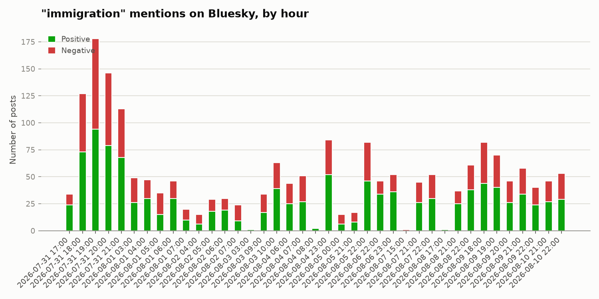
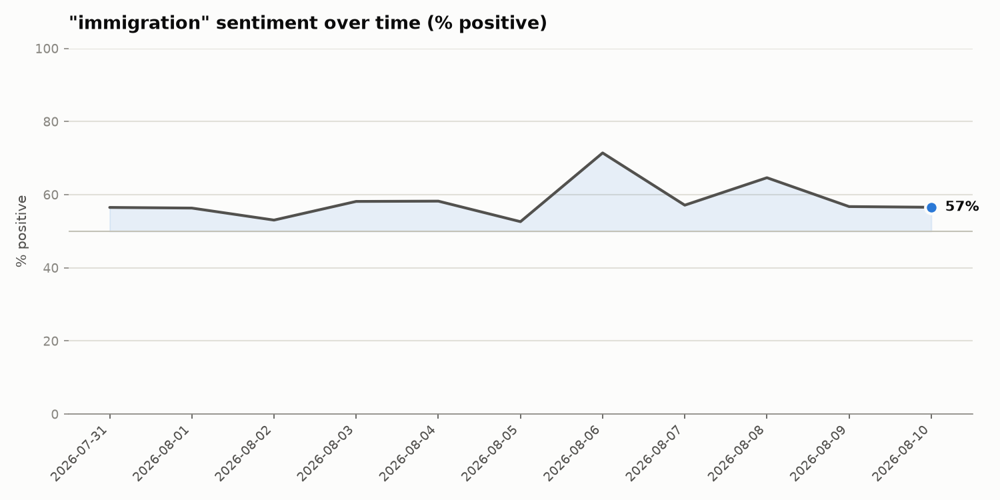
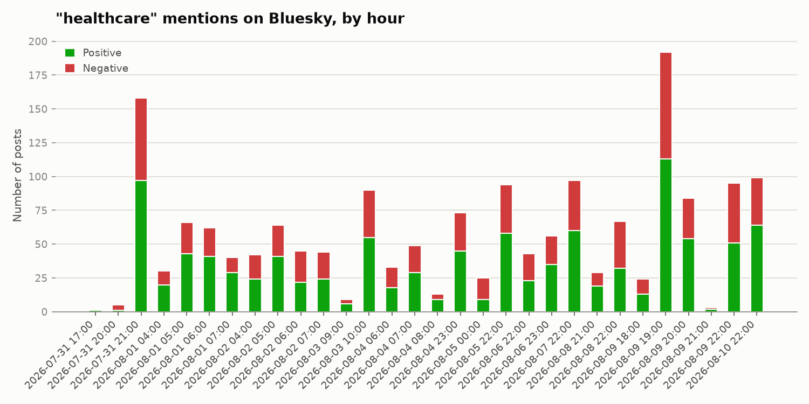
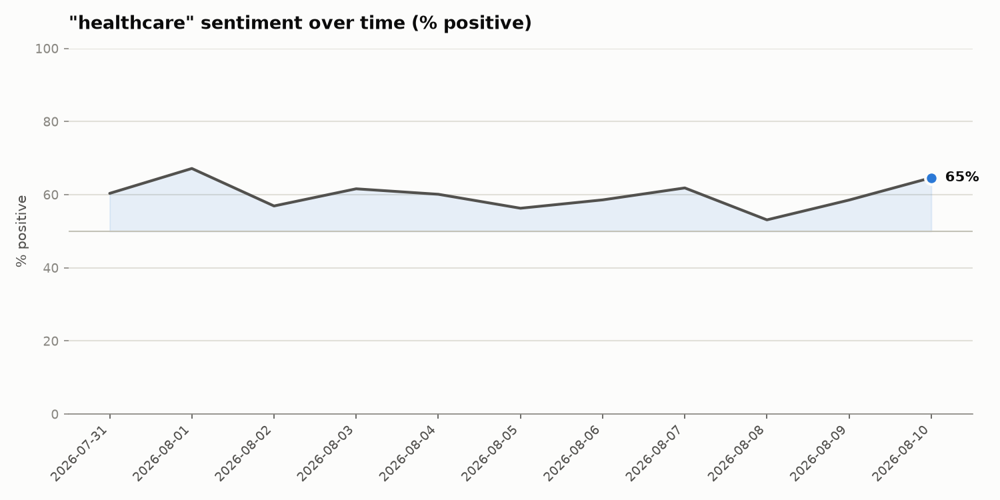
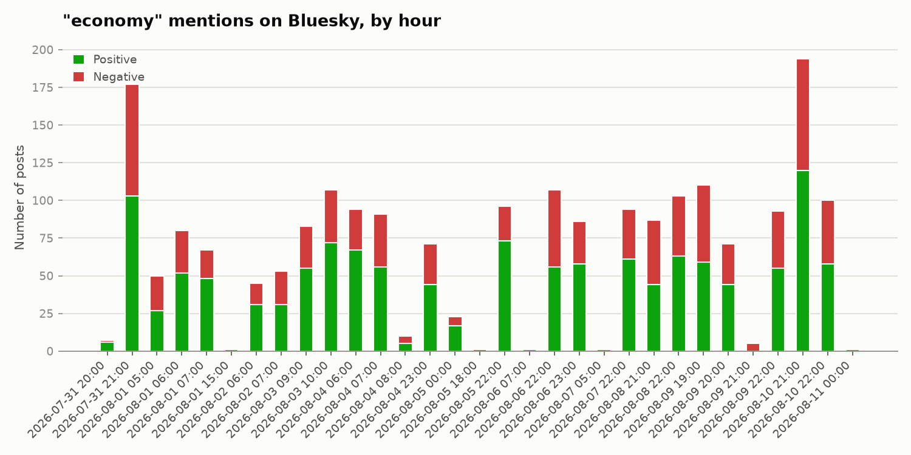
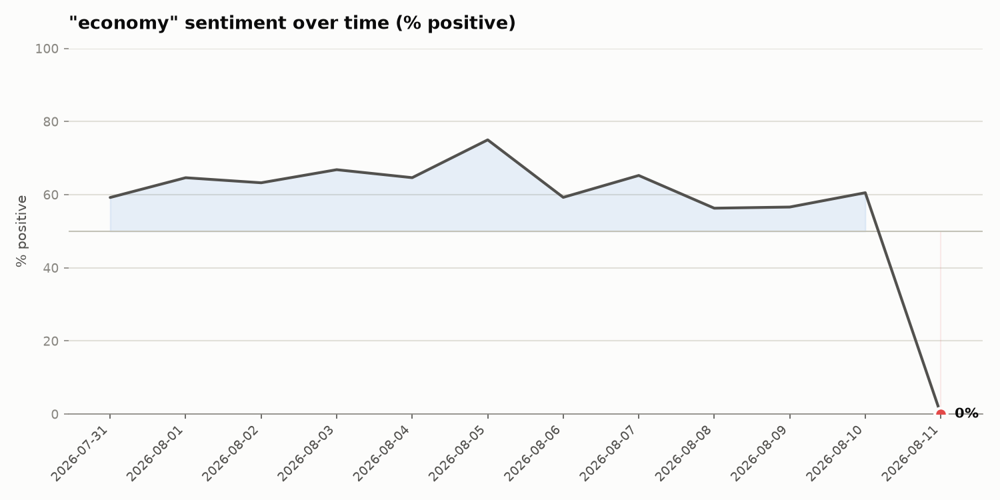
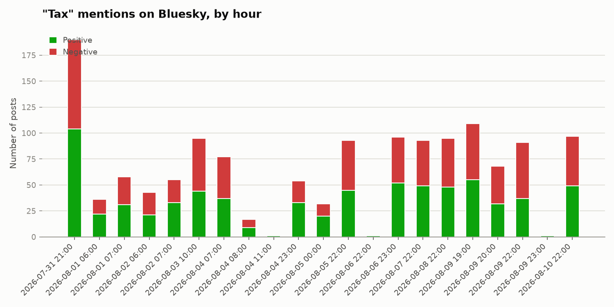
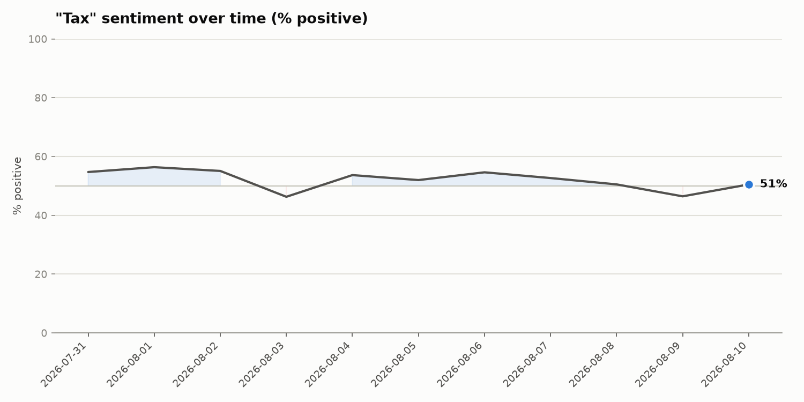

Last updated: 2026-08-10 22:38 UTC
This dashboard currently tracks raw mention volume for each topic on Bluesky -- an early, working version of a bigger plan. Coming next: richer AI-driven analysis explaining why a topic is trending (not just a one-line summary), more topic categories, and growth-rate rankings to surface emerging stories faster than raw volume alone.
1138 positive · 839 negative


1038 positive · 694 negative


1308 positive · 801 negative


724 positive · 678 negative

